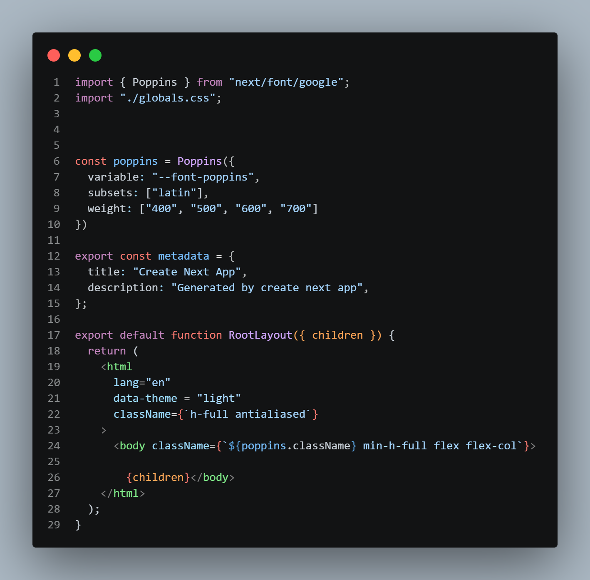
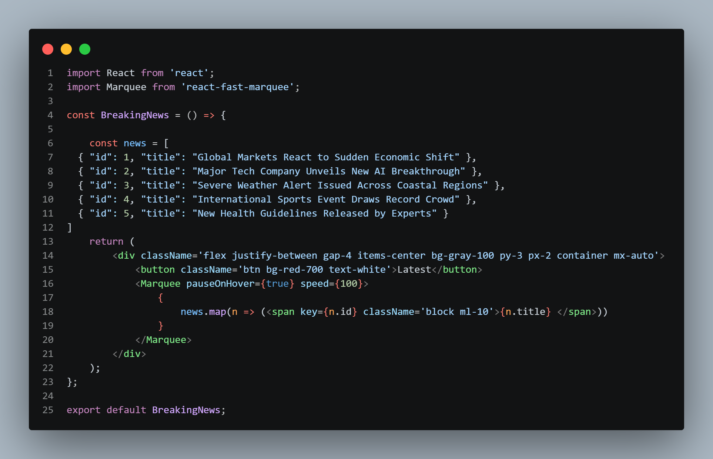
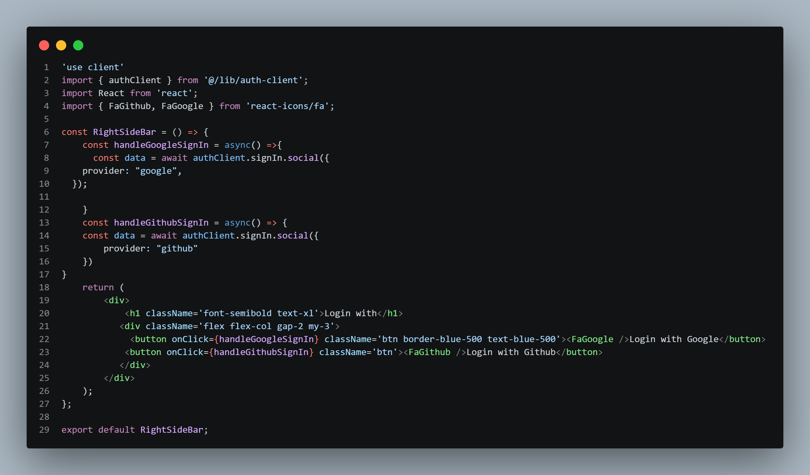
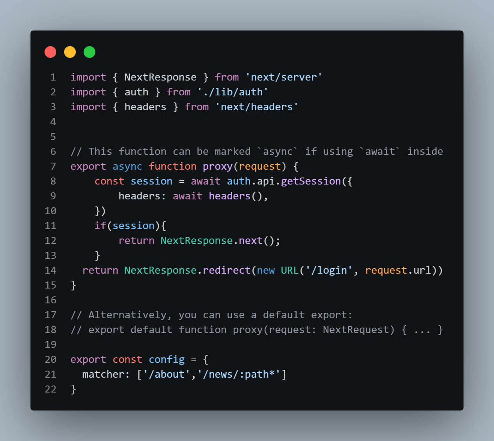

Moving headline ---> raect fast marquee ---> install using npm i react-fast-marquee. All we need to do use the Marquee tag
react hook form --> search web ---> install using npm install react-hook-form ---> follow documnetation if mongodb does not connect then use this in layout.js--- import dns from "node:dns" dns.setServers(['8.8.8.8','8.8.4.4']) For Google login follow better auth documentation---> Go to the link they give create a new project.......... For Github login dollow better auth documentation---->
Proxy--> Follow Next.js Proxy documentation---> First make a proxy.js in the src folder then write this---
for json file link. we can early deploy in vercel. make an account in vercel and import using github. with every push our project will be deployed in vercel.